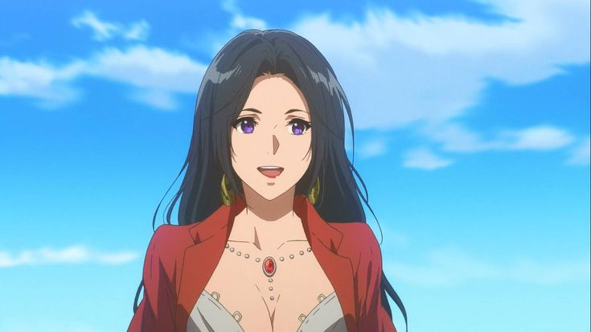
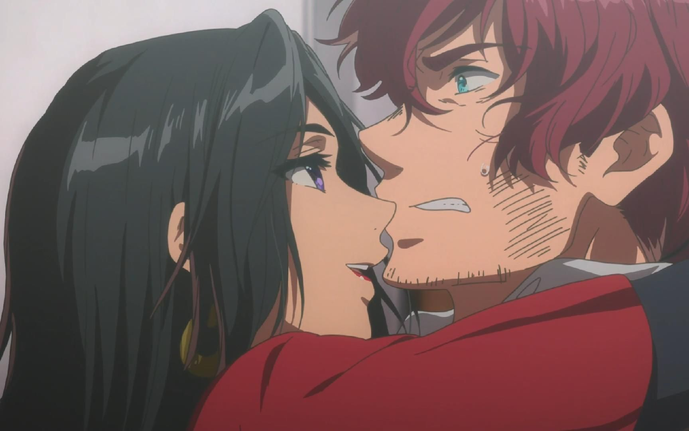
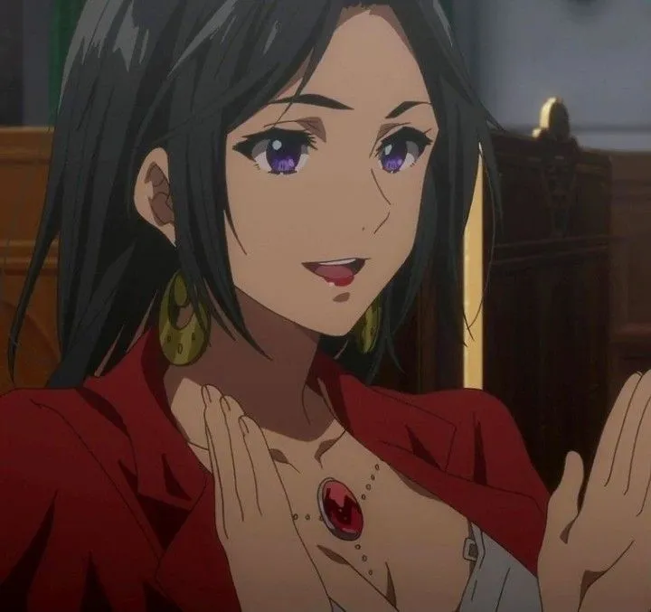
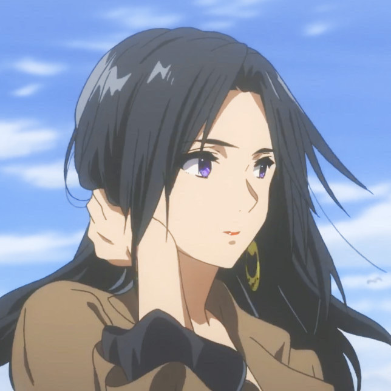
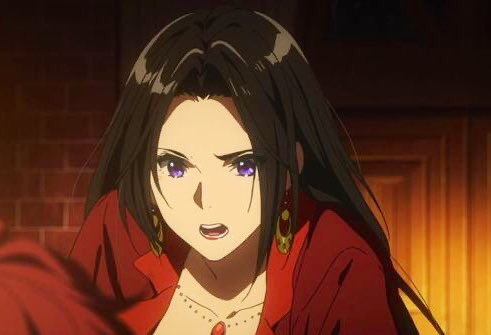
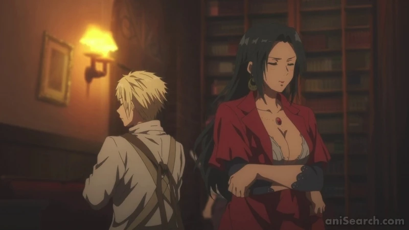

Cattleya Baudelaire

Cattleya Baudelaire es una Auto Memory Doll que trabaja en la CH Postal Company, donde destaca no solo por su profesionalismo, sino también por su carisma y elegancia. Antes de unirse a la empresa, Cattleya buscaba un lugar donde pudiera usar sus habilidades para expresar los sentimientos de las personas, encontrando en su trabajo como Doll una vocación que combina empatía y talento.
Cattleya es una mujer segura de sí misma, conocida por su estilo llamativo y su capacidad para conectar emocionalmente con sus clientes. A pesar de su apariencia deslumbrante y su actitud a veces despreocupada, posee una gran sensibilidad hacia los demás, lo que la convierte en una Doll excepcional. Su confianza inspira a quienes la rodean, y su capacidad para interpretar los sentimientos ajenos la convierte en una figura clave dentro de la CH Postal Company.
Cattleya comparte una relación cercana con Claudia Hodgins, con quien tiene una amistad que a menudo se confunde con coqueteo debido a su naturaleza juguetona. También actúa como una figura fraternal para Violet, ofreciéndole consejos y apoyo mientras esta navega por el complicado mundo de las emociones humanas. Su interacción con Benedict, aunque a veces humorística, demuestra el respeto y la camaradería que existe entre los empleados de CH Postal.
Cattleya representa la empatía y el poder de la comunicación en el mundo de Violet Evergarden. A través de su trabajo, ayuda a las personas a expresar sus sentimientos más profundos, contribuyendo al tema central de la serie: la conexión entre los corazones. Como una mujer fuerte y apasionada, su presencia es una fuente constante de apoyo y motivación, tanto para sus clientes como para sus colegas.
Galleria




